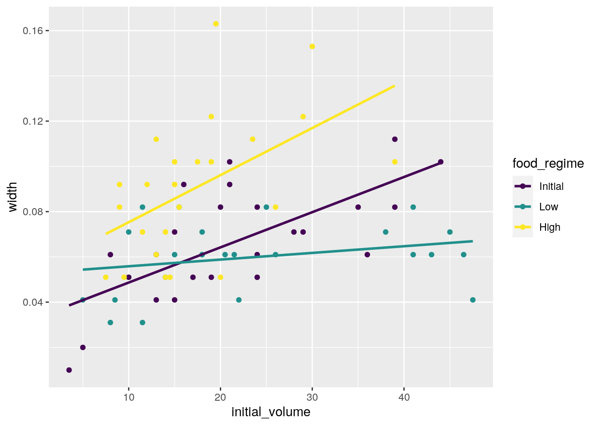
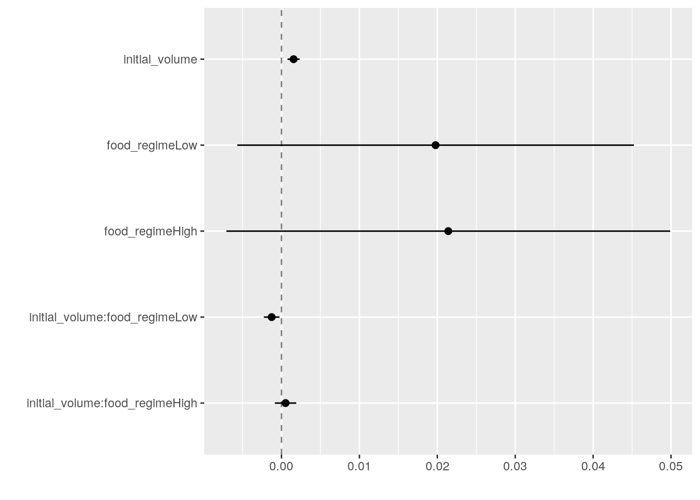
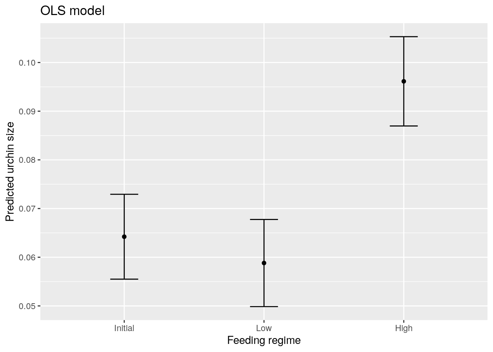
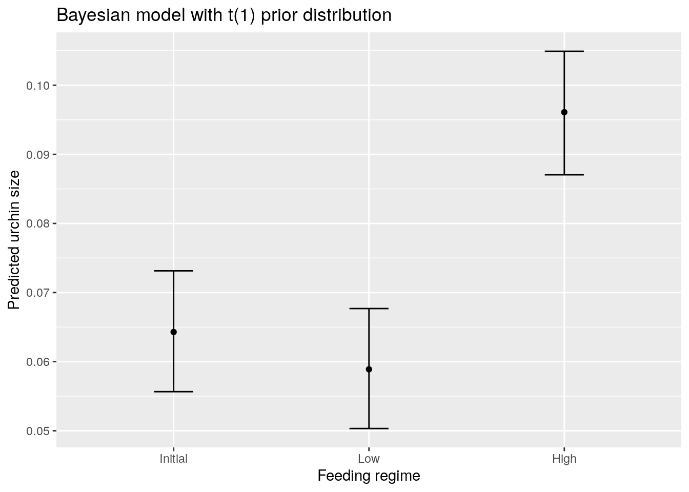

library(tidymodels) # for the parsnip package, along with the rest of tidymodels
library(readr) # for importing data
library(broom.mixed) # for converting bayesian models to tidy tibbles
library(dotwhisker) # for visualizing regression resultsPart 1: Build a model
In this document, I follow the tutorial located at tidymodels.org/start/models/, which is focused on the basics of model fitting with tidymodels.
Setup
Load data
This dataset includes metrics on how three different feeding regimes affect sea urchin size over time. The variable food_regime refers to the experimental feeding regime group, initial_volume to sea urchin size at the start of the experiment, and width to suture width at the end of the experiment:
urchins <- read_csv('https://tidymodels.org/start/models/urchins.csv',
show_col_types = FALSE) %>%
setNames(c('food_regime', 'initial_volume', 'width')) %>%
mutate(food_regime = factor(food_regime,
levels = c('Initial', 'Low', 'High')))
urchins %>% head(5)# A tibble: 5 × 3
food_regime initial_volume width
<fct> <dbl> <dbl>
1 Initial 3.5 0.01
2 Initial 5 0.02
3 Initial 8 0.061
4 Initial 10 0.051
5 Initial 13 0.041A quick exploration of the data indicates that the effect of initial volume on width at the end of the experiment might depend on feeding regime:
ggplot(data = urchins,
aes(x = initial_volume,
y = width,
group = food_regime,
col = food_regime)) +
geom_point() +
geom_smooth(method = 'lm', se = FALSE) +
scale_color_viridis_d()
Construct and fit model
We want to test whether the volume-width relationship depends on food regime (i.e. a volume-food regime interaction):
width ~ initial_volume * food_regimeSince we have a continuous and categorical predictor, as well as a continuous outcome, we can use linear regression.
In tidymodels we think about several steps:
- Specify the type of model (here, linear regression)
- Identify a method to fit/train the model, known as the model engine (here,
lm, indicating OLS; see all possible engines here) - Fit the model using the
fit()function, specifying the model formula
# save model object using default engine (lm)
lm_mod <- linear_reg()
# fit the model
lm_fit <-
lm_mod %>%
fit(width ~ initial_volume * food_regime, data = urchins)
# show model fit summary
tidy(lm_fit, conf.int = TRUE)# A tibble: 6 × 7
term estimate std.e…¹ stati…² p.value conf.low conf.h…³
<chr> <dbl> <dbl> <dbl> <dbl> <dbl> <dbl>
1 (Intercept) 3.31e-2 9.62e-3 3.44 1.00e-3 1.39e-2 5.23e-2
2 initial_volume 1.55e-3 3.98e-4 3.91 2.22e-4 7.60e-4 2.35e-3
3 food_regimeLow 1.98e-2 1.30e-2 1.52 1.33e-1 -6.15e-3 4.57e-2
4 food_regimeHigh 2.14e-2 1.45e-2 1.47 1.45e-1 -7.60e-3 5.04e-2
5 initial_volume:food_regime… -1.26e-3 5.10e-4 -2.47 1.62e-2 -2.28e-3 -2.41e-4
6 initial_volume:food_regime… 5.25e-4 7.02e-4 0.748 4.57e-1 -8.76e-4 1.93e-3
# … with abbreviated variable names ¹std.error, ²statistic, ³conf.highWe can visualize the coefficient estimates using the dotwhisker package:
tidy(lm_fit) %>%
dwplot(dot_args = list(size = 2,
color = 'black'),
whisker_args = list(color = 'black'),
vline = geom_vline(xintercept = 0,
colour = 'grey50', linetype = 2))
Generate predictions
Next, we will use our model fit to generate predictions about new data. For instance, we might want to predict width at the end of the experiment for urchins with initial volume of 20, for each feeding regime:
new_urchins <- expand.grid(initial_volume = 20,
food_regime = c('Initial', 'Low', 'High'))
new_urchins initial_volume food_regime
1 20 Initial
2 20 Low
3 20 HighWe use predict() to make model predictions for the new data. The predict() function yields a tibble of results with standardized column names:
# generate model predictions
mean_pred <- predict(lm_fit,
new_data = new_urchins)
# generate CIs around model predictions
confint_pred <- predict(lm_fit,
new_data = new_urchins,
type = 'conf_int')
# join all predictions
data_pred <-
new_urchins %>%
bind_cols(mean_pred) %>%
bind_cols(confint_pred)
data_pred initial_volume food_regime .pred .pred_lower .pred_upper
1 20 Initial 0.06421443 0.05549934 0.07292952
2 20 Low 0.05880940 0.04986251 0.06775629
3 20 High 0.09613343 0.08696233 0.10530453ggplot(data = data_pred,
aes(x = food_regime,
y = .pred,
ymin = .pred_lower,
ymax = .pred_upper)) +
geom_point() +
geom_errorbar(width = 0.2) +
labs(x = 'Feeding regime', y = 'Predicted urchin size') +
ggtitle('OLS model')
Fit model with a different engine
If we want, for instance, to fit our model using a Bayesian approach instead, we can use a different engine.
For Bayesian analysis in particular, we need to specify a prior distribution for each parameter; in this case, we set the priors to be wide using a Cauchy distribution:
# set prior distribution (Cauchy)
prior_dist <- rstanarm::student_t(df = 1)linear_reg() has a stan engine, so we can specify and fit the model accordingly, using the priors as an argument:
set.seed(123)
# specify model
bayes_mod <-
linear_reg() %>%
set_engine('stan',
prior_intercept = prior_dist,
prior = prior_dist)
# fit model
bayes_fit <-
bayes_mod %>%
fit(width ~ initial_volume * food_regime, data = urchins)
# show model fit summary
tidy(bayes_fit, conf.int = TRUE)# A tibble: 6 × 5
term estimate std.error conf.low conf.high
<chr> <dbl> <dbl> <dbl> <dbl>
1 (Intercept) 0.0334 0.00968 0.0176 0.0492
2 initial_volume 0.00156 0.000394 0.000892 0.00219
3 food_regimeLow 0.0192 0.0127 -0.00127 0.0411
4 food_regimeHigh 0.0211 0.0145 -0.00322 0.0452
5 initial_volume:food_regimeLow -0.00125 0.000505 -0.00207 -0.000413
6 initial_volume:food_regimeHigh 0.000532 0.000693 -0.000636 0.00172 As before, we can make model predictions:
bayes_pred <-
new_urchins %>%
bind_cols(
predict(bayes_fit, new_data = new_urchins)
) %>%
bind_cols(
predict(bayes_fit, new_data = new_urchins, type = 'conf_int')
)
ggplot(data = bayes_pred,
aes(x = food_regime,
y = .pred,
ymin = .pred_lower,
ymax = .pred_upper)) +
geom_point() +
geom_errorbar(width = 0.2) +
labs(x = 'Feeding regime', y = 'Predicted urchin size') +
ggtitle('Bayesian model with t(1) prior distribution')